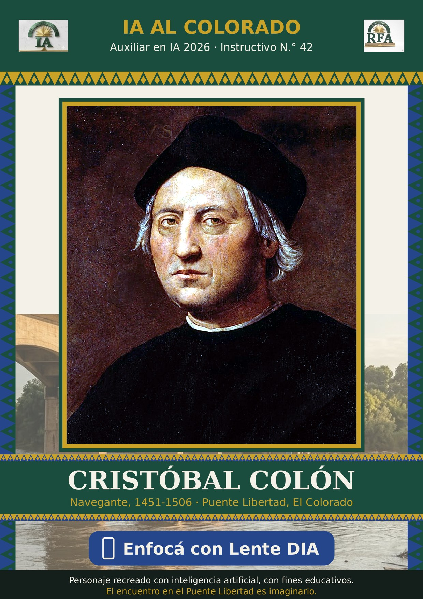
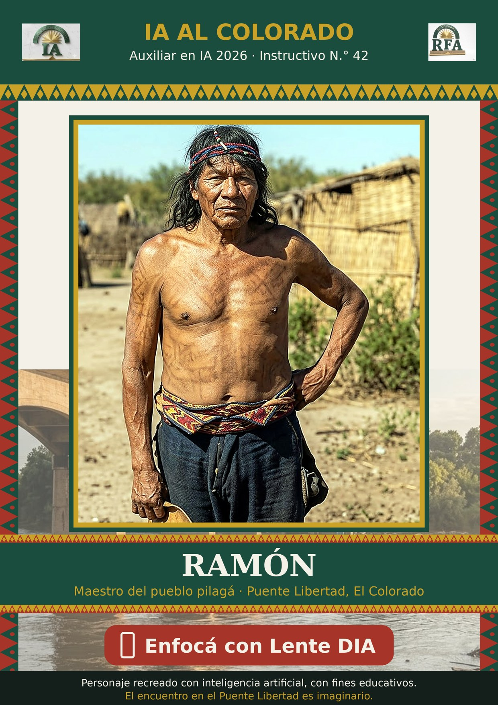

¿Qué lámina vas a enfocar?

Cristóbal Colón
El navegante de 1492 aparece sobre su lámina y te responde.
📷 Abrir la cámara
Ramón, maestro pilagá
Una voz del pueblo pilagá que vive hoy, parada sobre su lámina.
📷 Abrir la cámara- Tocá el personaje y después «Verlo con la cámara». Permití la cámara.
- La primera vez la página prepara la lámina unos segundos; después queda guardada.
- Enfocá la lámina impresa (o en la pantalla de una compu). Con − + cambiás el tamaño.
- Tocá «Hablar», permití el micrófono y conversá. También podés escribirle.
Personajes recreados con inteligencia artificial, con fines educativos. El encuentro en el Puente Libertad es imaginario.
Cada charla usa créditos de ElevenLabs. Funciona mejor con buena luz y la lámina sin reflejos.